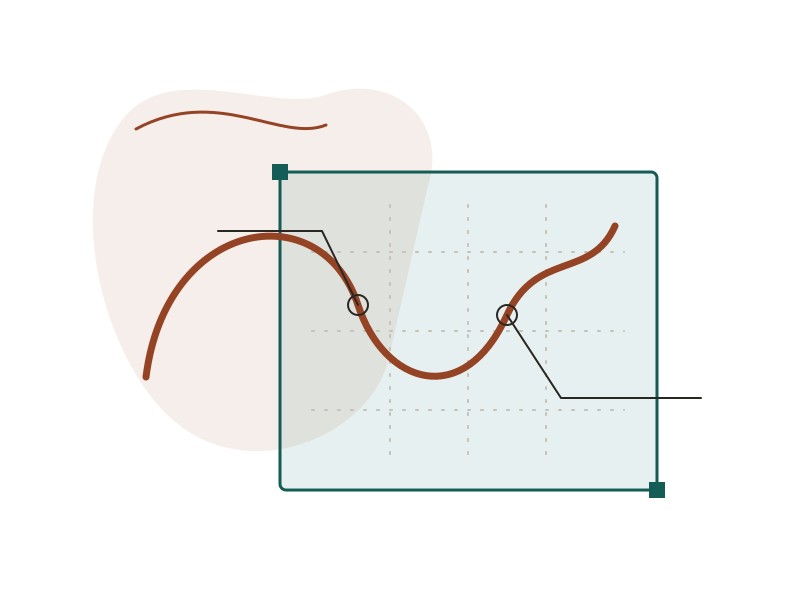
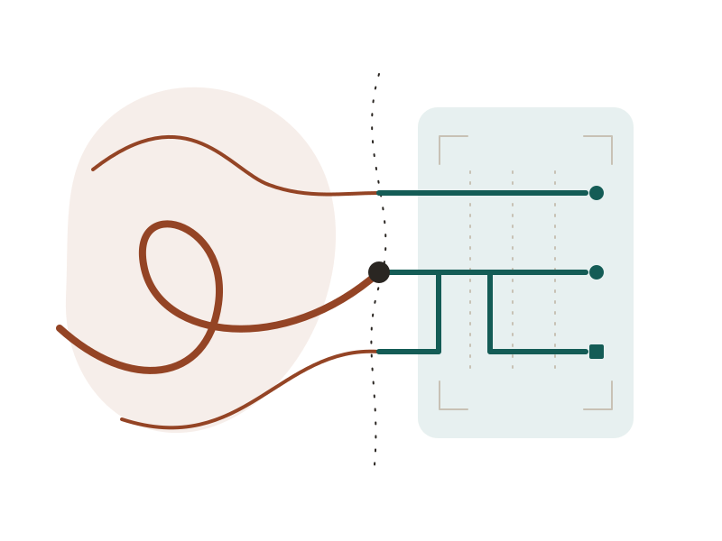
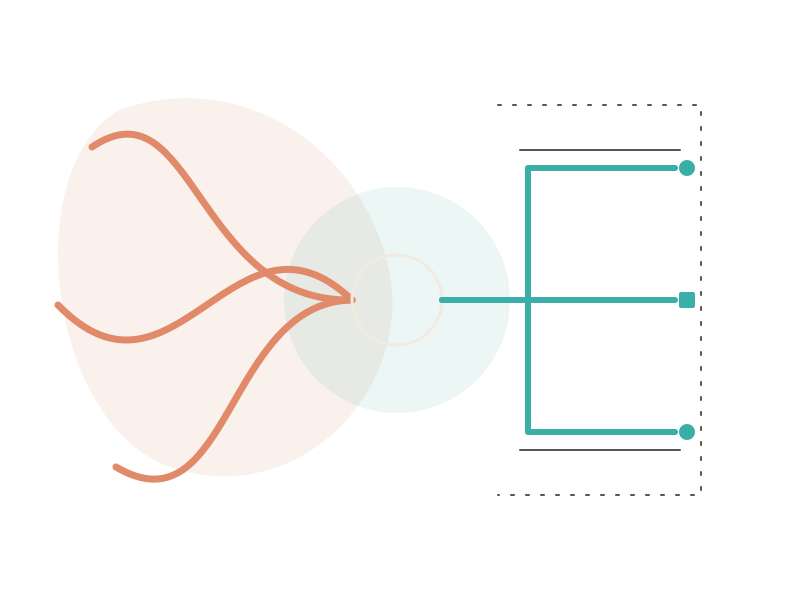
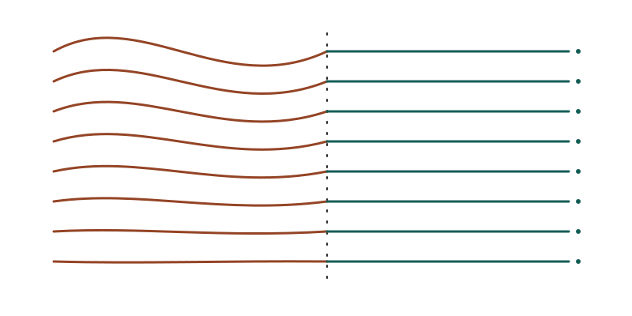
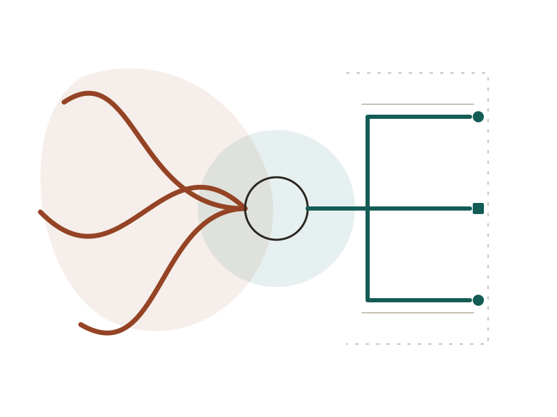
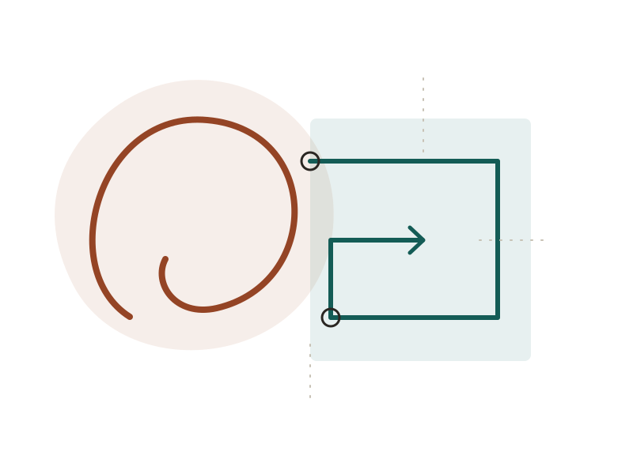
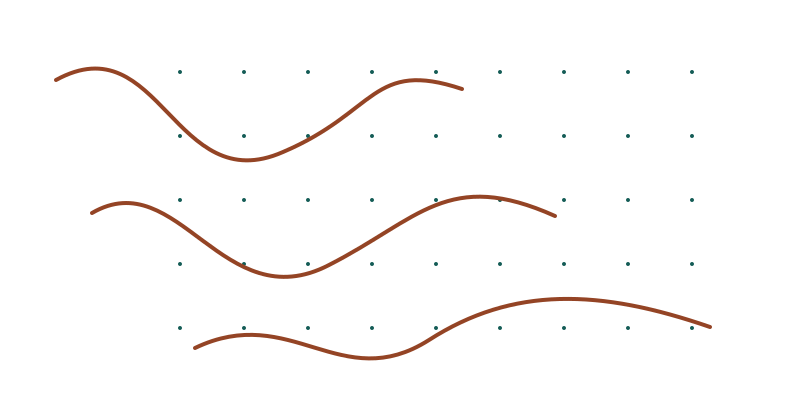

Pause & examine01

What does the model leave out?
Choose an everyday experience. Sketch how a system might represent it. Name one thing the representation cannot tell you.
The visual language / An illustrative specimen
Some ideas begin as a loose line. Give them a structure that helps someone follow.

A mark invites attention.
A frame gives it somewhere to go.
Curves, open seams and precise routes belong to the same family. Adjust their balance to the subject: a warmer invitation, a careful explanation, a moment to reflect.
Original Membrane artwork. All teaching and presentation content on this page is illustrative; it describes no event, study or personal achievement.
02 / Give an idea a first read

One focal construction. Open space around the title. Supporting context stays outside the drawing.
03 / Invite a closer look

Choose an everyday experience. Sketch how a system might represent it. Name one thing the representation cannot tell you.
The drawing opens
the question.
The instruction does the teaching. Keep it as readable text, beside an image that leaves room for interpretation.
04 / Organize for meaning
Use a small glyph to identify an action, a drawing to introduce an idea, and a diagram to explain a relationship. Their scale and structure can change with the task.
A labelled icon group: common alignment, consistent glyph size, enough explanation to distinguish the ideas.
Illustrative reasoning sequence. Read the steps in order; the geometry repeats that order.
Start with what someone is trying to understand.
Make the choices and omissions explicit.
Check what the model changes and what it cannot establish.

A decorative strip gives the page a pause. This one carries no values, measurements or recorded signals. Its caption sits on a separate solid surface.
05 / Work with the family
Four focal constructions and two supporting fields. Each is an editable, self-contained SVG in light and dark variants. Choose the version for the actual surface.
A gesture crosses an open seam and becomes aligned routes.
Focal · Openings and editorial covers

Independent paths gather, then continue through a shared structure.
Focal · Synthesis and presentation covers
An open frame brings a loose observation into view.
Editorial · Teaching cards and annotations

An unfinished loop leaves an idea open to revision.
Editorial · Reflection and iteration

A sparse field makes space for an unexpected crossing.
Field · Cropped margins and transitions
Curved and straight traces share an open interval.
Field · Wide strips and cover margins